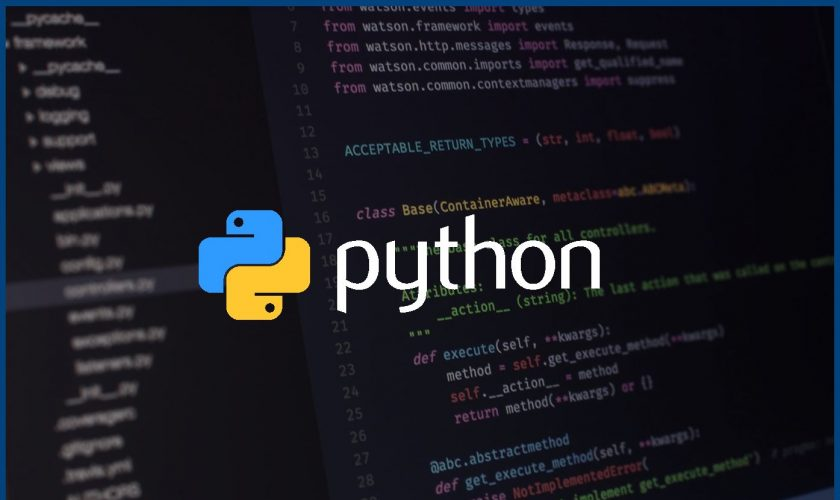
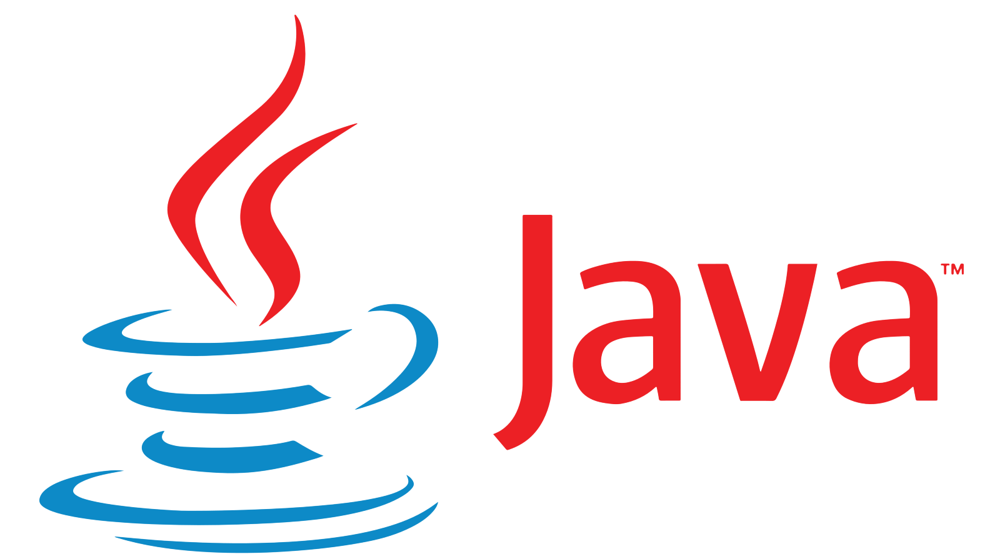

PHYTHON
Python is a multiparadigm, general-purpose, interpreted, high-level programming language. Python allows programmers to use different programming styles to create simple or complex programs, get quicker results and write code almost as if speaking in a human language. Some of the popular systems and applications that have employed Python during development include Google Search, YouTube, BitTorrent, Google App Engine, Eve Online, Maya and iRobot machines.
Python’s initial development was spearheaded by Guido van Rossum in the late 1980s. Today, it is developed by the Python Software Foundation. Because Python is a multiparadigm language, Python programmers can accomplish their tasks using different styles of programming: object oriented, imperative, functional or reflective. Python can be used in Web development, numeric programming, game development, serial port access and more.
There are two attributes that make development time in Python faster than in other programming languages:
1.Python is an interpreted language, which precludes the need to compile code before executing a program because Python does the compilation in the background. Because Python is a high-level programming language, it abstracts many sophisticated details from the programming code. Python focuses so much on this abstraction that its code can be understood by most novice programmers.
2.Python code tends to be shorter than comparable codes. Although Python offers fast development times, it lags slightly in terms of execution time. Compared to fully compiling languages like C and C++, Python programs execute slower. Of course, with the processing speeds of computers these days, the speed differences are usually only observed in benchmarking tests, not in real-world operations. In most cases, Python is already included in Linux distributions and Mac OS X machines.
C Language
C is a high-level and general-purpose programming language that is ideal for developing firmware or portable applications. Originally intended for writing system software, C was developed at Bell Labs by Dennis Ritchie for the Unix Operating System in the early 1970s. Ranked among the most widely used languages, C has a compiler for most computer systems and has influenced many popular languages – notably C++.
C belongs to the structured, procedural paradigms of languages. It is proven, flexible and powerful and may be used for a variety of different applications. Although high level, C and assembly language share many of the same attributes.
C++

C++ is a general-purpose object-oriented programming (OOP) language, developed by Bjarne Stroustrup, and is an extension of the C language. It is therefore possible to code C++ in a "C style" or "object-oriented style." In certain scenarios, it can be coded in either way and is thus an effective example of a hybrid language.
C++ is considered to be an intermediate-level language, as it encapsulates both high- and low-level language features. Initially, the language was called "C with classes" as it had all the properties of the C language with an additional concept of "classes." However, it was renamed C++ in 1983.
PHP
PHP is a recursive acronym for PHP: Hypertext Preprocessor, a scripting language used to create dynamic and interactive HTML Web pages. A server processes PHP commands when a website visitor opens a page, then sends results to the visitor’s browser.
PHP is very easy for beginners and also offers many advanced features for professional programmers. PHP runs most efficiently on an Apache server, but it can also run on IIS. PHP is an open-source and cross-platform language. It can be built as an Apache module or a CGI script. As an Apache module, PHP is very fast and lightweight, allowing for quick turnaround.
JAVA
Java is a general purpose, high-level programming language developed by Sun Microsystems. The Java programming language was developed by a small team of engineers, known as the Green Team, who initiated the language in 1991.
Originally called OAK, the Java language was designed for handheld devices and set-top boxes. Oak was unsuccessful and in 1995 Sun changed the name to Java and modified the language to take advantage of the burgeoning World Wide Web.
Later, in 2009, Oracle Corporation acquired Sun Microsystems and took ownership of two key Sun software assets: Java and Solaris.